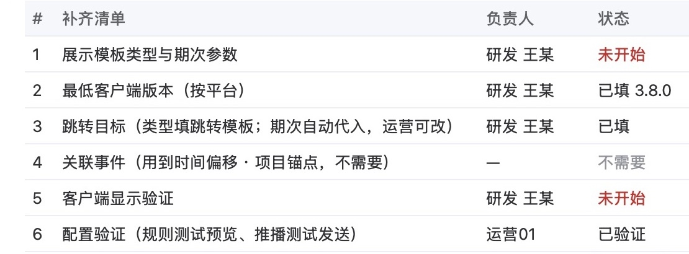
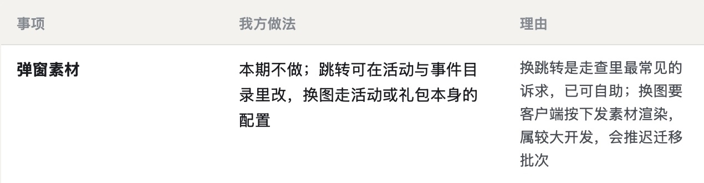

弹窗标签推送系统 · 2026-10-16 · 第 8 份产出 · 取舍类
第 8 份｜运营要换弹窗图片和跳转，本期只开放在活动与事件目录里改跳转、换图列为后续，这个取舍可以吗？
按下面 11 条依据逐条看 AI 评审的结论（每条只答「是」或「否」），你只判同意或不同意；也可补依据里缺的条目。
现状：弹窗图片和跳转写在客户端或「游戏设定」参数里，每次开单请研发改。
01判断依据：6 条，先看需求与替代，再看业内、成本、改回代价，最后对照你的原则
影响面与程度推后影响多大
1换图需求的出处和频次已查清，能说明推到后续对运营的影响有多大（多常遇到、每次要等多久）
对象 每次上活动配弹窗的运营|出处 你定的：10/15「客户端写死的弹窗……需要规整到后台里」；业内做法：Unity
业内顶尖产品怎么做
- Unity 云内容分发（游戏后台）：定位为不重装 App 就能更新内容的服务，最适合需要定期更新内容的内容型在线游戏 Unity 文档
我们对应的部分
- 出处：Jira 工单两张（2026-09），原话「弹窗显示的资源、跳转的 url 都需要可以通过后台配置……目前客端写死了」
- 频次：走查参照记为「每次活动」；周年庆导航页靠「游戏设定」里的参数加字段
- 每次要等多久：我们这里没有
AI 评审：否 有出处和频次「每次活动」，缺每次要等多久
你判：
影响面与程度不做换图时怎么办
2运营的这项需求本期有替代做法：跳转本期确实能自助改，换图有写明的现行路径（走哪、找谁）
对象 运营（周年庆导航页这类换图、换跳转）|出处 你定的：10/8「我们有什么短期快速提升的低成本操作也写清楚」；业内做法：Firebase
业内顶尖产品怎么做
- Firebase 远程配置：先在 App 里建好默认值，之后在控制台改值，不发版即可改 App 的行为和外观 Firebase 文档
我们对应的部分
原型 › 活动与事件目录 › 项目行「编辑」
- 跳转：期次跳转运营可改，下拉选目录中的项目或已登记页面，不可手输，改后引用处一起变；但在范围分级总表里，「期次跳转可改」所在一块标「可延后」
- 现在：周年庆导航页靠研发在「游戏设定」参数里加字段
- 换图：需求文档 3.5 写「换图走活动配置或礼包后台」「周年庆导航页这类本期仍按现有方式开单」；活动配置、礼包后台有没有图片字段我们这里没有核实；「热门资讯」能否承载导航页写为待核
AI 评审：否 改跳转所在的「配置提效」一块，在需求文档范围分级总表里标为可延后；换图没写找谁，图片字段未核
你判：
业内对照换图算基础还是扩展
3把弹窗换图推到后续，与业内同类产品的做法一致（业内也把运营自助换图当作可后置的扩展，而非基础能力）
对象 弹窗项目的内容字段|出处 业内做法：Braze、Firebase、OneSignal
业内顶尖产品怎么做
- Braze：站内信编辑时直接「添加图片」或填图片地址，从媒体库选已传或新传 Braze 文档
- Firebase：每条站内信填一个 HTTPS 图片地址；按钮可填网页链接或 App 内深链 Firebase 文档
- OneSignal：拖拽编辑器的图片块填图片地址或上传，JPG、PNG、GIF，最大 5 MB；图片可设点击跳转 OneSignal 文档
- 实现方式：SDK 自带几种弹窗模板，按后台下发的图片和链接显示；要自定义样式，客户端自己实现显示类 Firebase 文档
- 业内把运营换图明确列为后续的做法：未找到
我们对应的部分
- 弹窗项目：从活动与事件目录选，目录里没有图片字段；图片随活动、礼包本身的配置
- 需求文档 3.5：「自定义公告弹窗、弹窗项素材与跳转覆写」一行写「后续，不进本期」，与自定义公告弹窗（图文＋跳转）一起评估
AI 评审：否 Braze/Firebase/OneSignal均把图片作基础字段；后置做法未找到
你判：
成本依据「较大开发」写没写原因
4「换图」写明需开发、属较大开发，并写出定为较大开发的原因（如要改客户端渲染与下发协议）；人周与分端任务留研发评审
对象 客户端、服务端、后台|出处 你定的：方案写明「每项改动是现有功能可做还是需开发、开发量多大」，开发量分层（现有配置、小改动、较大开发）照常写；10/8「与上级讨论后会考虑成本」；业内做法：Firebase、Braze
业内顶尖产品怎么做
- Firebase：开发量在客户端显示——SDK 自带默认显示；自定义要写一个显示类并注册给 SDK Firebase 文档
- Braze：图片规格校验较轻——站内信图片 PNG、JPEG、GIF，建议 500 KB 内、最大 5 MB，按类型给推荐尺寸；比例不符只提示、不拦上传 Braze 文档
- 本项目的写法：当前阶段只标开发量层级并写原因，人周粗估与分端任务拆分是研发评审的产出
我们对应的部分
- 需求文档「排除项」一表：「在弹窗项上换图、换跳转需客户端按下发的素材渲染，并校验图片规格与跳转目标已上架，属较大开发」
- 夜间简报「我自行决定的事」一表：「换图要客户端按下发素材渲染，属较大开发，会推迟迁移批次」
- 范围分级总表（42 块，每块标成本层级）：没有换图这一块，没有为换图单标层级
- 相关的已写部分：「下发协议按展示模板类型渲染」所在的「目录扩展」一块，成本层级「大」、建议可延后，理由写「服务端＋三端客户端」
AI 评审：是 排除项写明换图要客户端按下发素材渲染并校验，属较大开发
你判：
可逆性可逆、不返工
5这个取舍改回来的代价可控：改为本期做时要动哪几处已写明；放到后续再补，本期的下发协议和客户端不用返工
对象 下发协议、客户端版本|出处 你定的：10/16 夜里先按推荐做的事进简报、写明改回哪里；业内做法：Firebase、Unity
业内顶尖产品怎么做
- Firebase 远程配置：先在 App 里建好默认值，之后控制台随时改，上线前后都可以 Firebase 文档
- Unity 云内容分发：新内容上传成新版本即可下发、不用重装；客户端须配合资源加载组件 Unity 文档
我们对应的部分

原型 › 活动与事件目录 › 草稿项的补齐清单
- 下发协议：每项带参数，键由研发按展示模板类型定，例 {"boardId":"MAF26","theme":"midautumn"}；没有约定图片键
- 客户端版本：新渲染能力要新客户端版本，低于门槛版本的玩家不显示新项目
- 改回哪里：夜间简报「自行决定」表这一行只写了做法和理由，没写你不同意时改哪几处
AI 评审：否 没写改回哪几处；协议无图片键，后续是否返工未说明
你判：
方向一致往全面写、标成本
6换图按理想状态写进了需求并标了成本层级，本期做不做留给与上级讨论，没有在需求里先删掉
对象 推送后台需求文档|出处 你定的：10/8「我们写需求肯定是往好了写往全面了写……」
理想状态应写到哪（走查参照）
- ① 在弹窗项目上换图片、跳转
- ② 校验图片规格与跳转目标已上架
- ③ 测试账号预览
- ④ 保存为新版本
我们对应的部分
- 弹窗方案需求分析：有场景「自助改弹窗图文与点击去向」
- 推送后台需求文档：只在 3.5 排除项写一行；正文没有换图的字段、流程、校验；范围分级总表里没有这一块
- 谁定的：夜里 01:33、01:50 两次记为「交你定」，之后改记「自行决定」
AI 评审：否 需求文档「排除项」一节只有一行排除，正文和范围分级总表里都没有；交你定改成了自行决定
你判：
业内做法都已打开官方文档核对。这几家是通用站内信与游戏后台工具，不是棋牌游戏的自建弹窗。
02按评审维度补齐的 5 条依据：选项与推荐、现状核实、名称、多余内容、理由按目标三层
按评审维度表补齐；每条小标前半是所属维度。
取舍成立写没写出可选的做法和推荐
7这个决定写出了至少两个有实质差别的选项（本期做换图／本期只开放改跳转、换图后续做），并写明推荐哪个、为什么
对象 需求文档 3.5 排除项该行；夜间简报「我自行决定的事」表|出处 写作标准「候选方案之间等权并列，且须有实质差别」；汇报格式「推荐：必须有」
依据的标准怎么写
- 写作标准 · 方案与决策：给出几个方案，由决策者拍板；候选方案之间等权并列，且须有实质差别
- 写作标准 · 方案与决策：不冲突的事不列为待决；短期与长期是同一方案的两部分
- 汇报格式 · 要你定的事：选项写成封闭选项，每个写清具体做法；推荐必须有，先自己想清楚答案；附理由
我们对应的部分

夜间简报 › 我自行决定的事 › 弹窗素材
- 需求文档 3.5：说明栏写「后续，不进本期」；理由「在弹窗项上换图、换跳转需客户端按下发的素材渲染，并校验图片规格与跳转目标已上架，属较大开发」
- 「本期做换图」这一选项的做法与代价：我们这里没有
AI 评审：否 只写了「本期不做换图」一个做法，本期做换图没有作为并列选项写出做法和代价
你判：
事实与依据换图现状核实没有
8「换图现在怎么做」的现状（谁换、走什么流程、多久生效）已向运营或研发核实，并写明核实来源
对象 换图的现行路径|出处 写作标准「事实只写已证实的，不猜」；业内做法：Intercom
业内顶尖产品怎么做
- Intercom RICE 排序法：每个待排需求估一个「信心」百分比：100% 高、80% 中、50% 低，再低算「登月」；用来压住诱人但定义不清的想法，原文要求自问「估计到底有多少依据」 Intercom 文章
我们对应的部分
- 需求文档 3.5：「图片随活动、礼包本身的配置，换图走活动配置或礼包后台」「周年庆导航页这类换图、换跳转本期仍按现有方式开单」；两句没写向谁核实
- 需求文档 3.5：「先核现有『热门资讯』能否承载公告与导航页」
- Jira 工单（2026-09）原话：「弹窗显示的资源、跳转的 url 都需要可以通过后台配置……目前客端写死了」
- 谁换、多久生效：我们这里没有；需求文档的待确认清单里也没有这一项
AI 评审：否 换图现状没有注来源，谁换、多久生效也没写，与 Jira「客端写死」说法不一致
你判：
措辞与指代两个名称读不读得懂
9「自定义公告弹窗」「弹窗项素材与跳转覆写」第一次出现时写明指什么，不了解项目的读者读得懂
对象 需求文档 3.5 该行的名称|出处 写作标准「后台功能名第一次出现说明它是什么」
依据的标准怎么写
- 写作标准 · 措辞：人群、功能、指标第一次出现写出具体名称；后台功能名第一次出现说明它是什么；不用项目内部简称
- 写作标准 · 结构：概念第一次出现就交代它是什么，不让读者先记住一个空名字、往后翻才知道指什么
我们对应的部分
- 正文第一次出现：需求文档 3.5「不在本需求」栏「自定义公告弹窗、弹窗项素材与跳转覆写（10/16 夜补充）」
- 同行说明里的相关句：「不做的是在单条弹窗规则的排序项上覆写图片或跳转」；「与自定义公告弹窗（图文＋跳转）一起评估」
- 需求文档术语表：没有这两个名称
AI 评审：否 自定义公告弹窗只有「图文＋跳转」括注；弹窗项、排序项没解释，术语表也没有
你判：
无多余内容说明里有没有过程话
10这条取舍的说明里没有已被否定的推导、工作过程用语和与决定无关的背景
对象 需求文档 3.5 该行|出处 写作标准「要删掉的内容」
依据的标准怎么写
- 要删：已被决策者否定或经论证不成立的选项与推导；等待决策的候选项（包括不推荐的）保留并等权呈现
- 要删：过程痕迹与元信息，如评审、上级、版本沿革、与研发的沟通过程
- 不在此列：给读者的推荐、需求文档的修改记录
我们对应的部分
- 名称栏：「自定义公告弹窗、弹窗项素材与跳转覆写（10/16 夜补充）」
- 说明栏全文：「后续，不进本期：本期弹窗项目从项目目录选（5.12 序号 18），图片随活动、礼包本身的配置，换图走活动配置或礼包后台；（10/16 夜补充）边界：跳转可在项目目录由运营改期次的跳转目标（4.1.20「期次跳转与批量加入弹窗规则」），改的是项目本身、引用处一起变；不做的是在单条弹窗规则的排序项上覆写图片或跳转；在弹窗项上换图、换跳转需客户端按下发的素材渲染，并校验图片规格与跳转目标已上架，属较大开发。与自定义公告弹窗（图文＋跳转）一起评估，先核现有「热门资讯」能否承载公告与导航页；周年庆导航页这类换图、换跳转本期仍按现有方式开单」
AI 评审：否 该行有两处「（10/16 夜补充）」过程标注，还有「先核热门资讯」这类待办语
你判：
取舍成立推后理由按近、中、远三层
11推荐把换图放到后续的理由按近→中→远判断：写明了换图是否属于主管这一期要的交付，没有用平台业绩去否定本期要交的东西或主管这一期要的交付
看哪里 需求文档「排除项」一表换图一行；夜间简报「我自行决定的事」一表「弹窗素材」一行；范围分级总表开头的目标|出处 你定的：工作原则「目标分三层，冲突时按近 → 中 → 远判断」
依据的标准怎么写
- 工作原则：目标分三层，冲突时按近 → 中 → 远判断。近＝本期要交的东西；中＝主管这一期的交付；远＝平台业绩。远目标对范围的异议写成提案交主管，主管定之前照常做完主管要的交付
- 起因（9/29）：早先的方案用业绩把主管要的五类人群、标签需求、推送需求一件件论证掉了
- 主管这一期的交付（产品计划原文，弹窗一条）：「彈窗功能：滿足不同用戶下的彈窗內容，并整體控制彈窗 數量/內容/順序等」「優先進行已有功能滿足內容，功能不滿足部分，排期補充」
我们对应的部分
- 夜间简报「弹窗素材」一行的理由：「换跳转是走查里最常见的诉求，已可自助；换图要客户端按下发素材渲染，属较大开发，会推迟迁移批次」
- 需求文档「排除项」的理由：「本期弹窗项目从项目目录选……图片随活动、礼包本身的配置，换图走活动配置或礼包后台」；「属较大开发」；「与自定义公告弹窗（图文＋跳转）一起评估」
- 范围分级总表开头写的目标：「推送统一后台（统一入口、易用、发送量与到达率等数据，弹窗纳入同一后台）与弹窗按人群差异化」；表里没有换图这一块
- 换图是否属于主管这一期要的交付：我们这里没有写明
- 理由里的平台业绩（活跃、付费、营收）：没有
AI 评审：否 未用业绩作理由，但各处都没写换图算不算主管这一期要的弹窗内容
你判：
业内做法已打开原文核对。
03参考案例：你推翻过的两份同类稿
例 1 需求按成本和现有后台先删
- 你的原话
- 「我们写需求肯定是往好了写往全面了写，写完之后可能与上级讨论后会考虑成本后发现这个不要那个也不要……」（10/8）
- 当时的稿
- 10/8 需求分析「本期范围：……优先基于现有后台配置」「本期不做：……客户端写死的新手弹窗改造（仅记录缺口）」；场景里没有自助改图文
- 改后
- 按理想状态写全，场景从 15 个补到 25 个，补回「自助改弹窗图文与点击去向」；成本分短期、中期、长期放到方案设计
例 2 客户端写死的没有规整进后台
- 你的原话
- 「然后有很多客户端写死的弹窗以及服务器写死的活动推送，以及快显。这些东西都需要规整到后台里。」（10/15）
- 当时的稿
- 10/15 原型：没有写死项迁入的入口与说明
- 改后
- 需求文档加「写死项清点与迁入」：客户端、服务端各出写死清单，每项迁入后成为一条规则或推送，每项一个切换开关；原型加迁入管理页
04怎么判
直接在页面上点：每条下面点「同意」或「不同意」（不同意可写一句理由），页面最下面可补还缺的标准；点完自动保存，判完在对话里说一声「判完了」即可。
05还缺什么，判完没有
原文：需求文档 3.5 排除项 4.1.20 活动与事件目录 8.1 范围分级总表 原型 · 活动与事件目录 请你判的 10 份产出